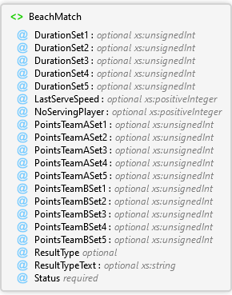

BeachMatch Element
Description
Data of the beach volleyball match.
| Namespace | (none) |
Diagram

Overview
 |
BeachMatch
Data of the beach volleyball match.
|

Attributes
| Name | Type | Use | Default | Fixed | Description |
|---|---|---|---|---|---|
| DurationSet1 | xs:unsignedInt | optional | Duration of set 1. This value is expressed in seconds. If set 1 has not been started, this attribute must be omitted. | ||
| DurationSet2 | xs:unsignedInt | optional | Duration of set 2. This value is expressed in seconds. If set 2 has not been started, this attribute must be omitted. | ||
| DurationSet3 | xs:unsignedInt | optional | Duration of set 3. This value is expressed in seconds. If set 3 has not been started, this attribute must be omitted. | ||
| DurationSet4 | xs:unsignedInt | optional | Duration of set 4. This value is expressed in seconds. If set 4 has not been started, this attribute must be omitted. | ||
| DurationSet5 | xs:unsignedInt | optional | Duration of set 5. This value is expressed in seconds. If set 5 has not been started, this attribute must be omitted. | ||
| LastServeSpeed | xs:positiveInteger | optional | Speed of the last serve. This value is expressed in m/h (meter per hour). If this value is not known, this attribute must be omitted. | ||
| NoServingPlayer | xs:positiveInteger | optional | Number of the player that is serving for the current rally, or that will serve the next point, if the point is finished. If this value is not known or a set is not played, this attribute must be omitted. | ||
| PointsTeamASet1 | xs:unsignedInt | optional | Number of points for team A in set 1. If set 1 has not been started, this attribute must be omitted. | ||
| PointsTeamASet2 | xs:unsignedInt | optional | Number of points for team A in set 2. If set 2 has not been started, this attribute must be omitted. | ||
| PointsTeamASet3 | xs:unsignedInt | optional | Number of points for team A in set 3. If set 3 has not been started, this attribute must be omitted. | ||
| PointsTeamASet4 | xs:unsignedInt | optional | Number of points for team A in set 4. If set 4 has not been started, this attribute must be omitted. | ||
| PointsTeamASet5 | xs:unsignedInt | optional | Number of points for team A in set 5. If set 5 has not been started, this attribute must be omitted. | ||
| PointsTeamBSet1 | xs:unsignedInt | optional | Number of points for team B in set 1. If set 1 has not been started, this attribute must be omitted. | ||
| PointsTeamBSet2 | xs:unsignedInt | optional | Number of points for team B in set 2. If set 2 has not been started, this attribute must be omitted. | ||
| PointsTeamBSet3 | xs:unsignedInt | optional | Number of points for team B in set 3. If set 3 has not been started, this attribute must be omitted. | ||
| PointsTeamBSet4 | xs:unsignedInt | optional | Number of points for team B in set 4. If set 4 has not been started, this attribute must be omitted. | ||
| PointsTeamBSet5 | xs:unsignedInt | optional | Number of points for team B in set 5. If set 5 has not been started, this attribute must be omitted. | ||
| ResultType | Restriction of ResultType Simple Type | optional | Indicates how the match was finished. Value between 0 and 9. If this value is not known, this attribute must be omitted. | ||
| ResultTypeText | xs:string | optional | Additional information about the result type. If there is no such text, this attribute must be omitted. | ||
| Status | Restriction of BeachMatchStatus Simple Type | required | Status. See http://www.fivb.org/VisSDK/VisWebService/?BeachMatchStatus.html#BeachMatchStatus.html for valid values. |
Source
|
See Also